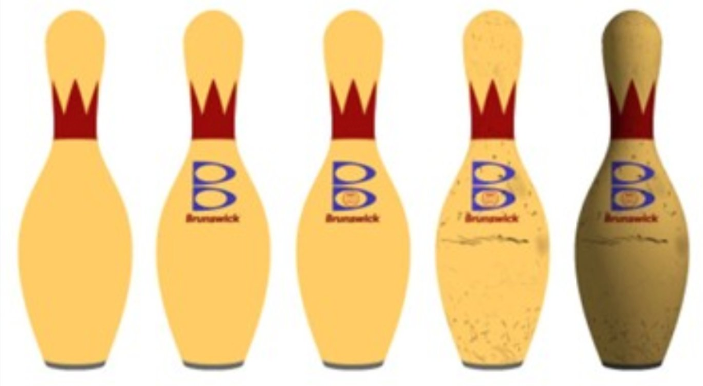
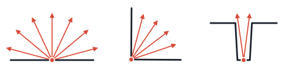
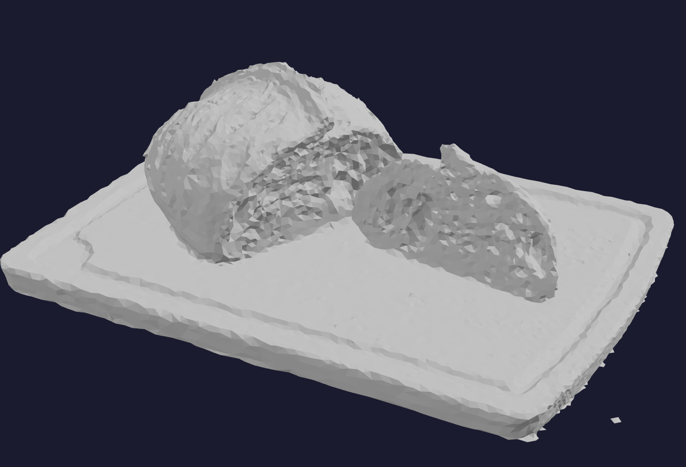

Page 26: Even More Texture Mapping
We’ve already seen several kinds of texture mapping: regular (color) mapping, normal mapping, bump mapping, displacement mapping, reflection mapping, environment maps for backgrounds, and environment maps for lighting. But there are many more.
In the next workbook, we will discuss using 3D drawing of the scene to create maps. This will allow us to create dynamic environment maps (where the reflections include moving objects in the scene) and shadow maps (where we simulate shadows).
There are a few topics that are useful, but we won’t be able to discuss them at length. I mention them here so that you have at least heard the terms.
Layered Textures
Sometimes, we create surface effects by “layering” textures on top of one another to combine them. For example, we might have a texture that has the main surface material (say, painted wood). Then we might add a texture that has the scratches and markings. And then maybe a texture with a sticker to apply.
The ability to assemble appearances by combining separate textures is used by artists to create complicated looks.
{kind=link}

Adding successive layers of texture to create a more complex appearance. This image is adapted from an image that was inspired by an old Pixar example. However, I don’t know where it comes from.
Light Maps
The idea of a light map is to “paint” lighting effects right into the surface colors. The texture map for the surface contains the color that the surface appears including the effects of lighting.
Lightmaps can be used two ways: (1) they can be used to add specific special effects (like adding a highlight), or (2) they can be computed using some complicated rendering process that takes too long to compute for interaction.
Either way, light maps “bake in” the lighting: the lighting effects are in the surface colors. They cannot change if the scene changes—for example, if the light moves or the object moves in relationship to the light. Also, any kind of specular effect or reflection will be a problem if the viewpoint moves.
Light maps are an example of a precomputation strategy. They allow for an expensive lighting simulation to be computed ahead of time, and used for viewing at interactive rates.
Ambient Occlusion
Ambient occlusion is a lighting technique. However, it is common to pre-compute it offline and store the results in a kind of map so it can be used quickly.
Ambient occlusion refers to the effect that some parts of objects are generally darker because they are exposed to less light. The shape of the object creates self-shadowing that darkens parts of it.
{kind=link}

Concept of ambient occlusion in 2D. The point on the flat surface gets light from more directions than the point in the corner, which gets more than the point in a crevace. For each point, we compute the amount of the outside world it can see, and darken the color at that point based on how much is blocked.
With ambient occlusion, each point on a surface has a number that represents how much light can get to it. The surface is darkened by that amount at that point. It works well to add some realistic contrast to scenes.
{kind=link}

Diffuse Lighting
{kind=link}
Lighting+Ambient Occlusion
{kind=link}
Example of ambient occlusion applied to a scene. From ARVI: Ambient Occlusion Tutorial
While there are methods to compute ambient occlusion approximately, computing it correctly requires non-local lighting computations that consider the entire complex object (or even the whole scene).
A common practice is to compute ambient occlusion for an object off line, and then to store the amount of darkening in an ambient occlusion map. At drawing time, this map is used to determine an amount of darkening that should be applied to the object.
Next: Page 27 - Graphics Town Buildings